Section 4.2 Circles
By the end of this section, you should |
Subsection 4.2.1 Definition of a Circle
| Definition 4.2. A circle is the locus of points (set of points) in a plane each of which is equidistant from a fixed point in the plane. The fixed point is called the center of the circle and the constant distance is called its radius. |
Definition 4.2 is illustrated by Figure 4.6 in which the center of the circle is denoted by ’’C’’ and its radius is denoted by r.
Observe that a circle is symmetric with respect its center. Based on the definition, a point P is on the circle if and only if its distance to C is r, that is |CP| = r. A point in the plane is said to be inside the circle if its distance to the center C is less than r. Similarly, a point in the plane is said to be outside the circle if its distance to C is greater than r. Moreover, a chord of the circle is a line segment whose endpoints are on the circle. A diameter is a chord of the circle through the center C. Consequently, C is the midpoint of a diameter and the length of a diameter is 2r. For example, AB and QR are diameters of the circle in Figure 4.6.
Example 4.7: Consider a circle of radius 5 whose center is at C(2,1). Determine whether each of the following points is on the circle, inside the circle or outside the circle:
P1(5, 5), P2(4, 5), P3(−2, 5), P4(−1, −2), P5(2,−4), P6(7, 0).
Solution: The distance between a given point P(x,y) and the center C(2,1) is given by
|PC| = or . We need to compare |PC| with the radius 5. Note that |PC| =5 ⇔ |PC|2= 25, |PC|< 5 ⇔ |PC|2< 25 ,
and |PC| >5 ⇔ |PC|2 > 25.
Thus, P is on the circle if |PC|2 =25, inside the circle if |PC|2 < 25 and outside the circle if |PC|2 > 25. So, we can use the square distance to answer the question. Thus, as
|P1C|2 = (5−2)2+(5−1)2 = 25, |P2C|2 = (4−2)2+(5−1)2 = 20 and |P3C|2 = (−2−2)2+(5−1)2 = 32,
P1 is on the circle, P2 is inside the circle, and P3 is outside the circle. Similarly, you can show that P4 is inside the circle, P5 is on the circle, and P6 is outside the circle.
Exercise 4.2.1
|
1. Suppose the center of a circle is C(1,−2) and P(7, 6) is a point on the circle. What is the radius of the circle?
2. Let A(1, 2) and B(5, −2) are endpoints of a diameter of a circle. Find the center and radius of the circle.
3. Consider a circle whose center is the origin and radius is. Determine whether or not the circle contains the following point.
(a) (1, 2) (b) (0,0) (c) (d) (3/2, 3/2)
(e) (5, 0) (f) (−1, −2), (g) (h) (5/2, 5/2)
4. Consider a circle of radius 5 whose center is at C(−3,4). Determine whether each of the following points is on the circle, inside the circle or outside the circle:
(a) (0, 9) (b) (0,0) (c) (1,6) (d) (1, 0)
(e) (−7, 1) (f) (−1, −1), (g) (2,4) (h) (5/2, 5/2)
|
Subsection 4.2.2 Equation of a Circle
We now construct an equation that the coordinates (x,y) of the points on the circle should satisfy. So, let P(x,y) be any point on a circle of radius r and center C(h,k) (see, Figure 4.7). Then, the definition of a circle requires that
|CP| = r
⇒
or
|
(Standard equation of a circle with
center (h,k) and radius r.
|
In particular, if the center is at origin, i.e., (h,k) = (0,0), the equation is
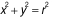 |
(Standard Equation of a circle of radius r centered at origin) |
Example 4.8: Find an equation of the circle with radius 4 and center (−2, 1).
Solution: Using the standard equation of a circle in which the center (h, k) = (−2, 1) and radius r = 4 we obtain the equation
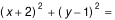
.
Example 4.9: Find the equation of a circle with endpoints of a diameter at P(–2, 0) and Q(4, 2).
Solution: The center of the circle C(h,k) is the mid-point of the diameter. Hence, . Also, for its radius r, r2 = |CP|2=(1+2)2+(1 – 0)2=10.
Thus, the equation of the circle is (x – h)2+(y –k)2 = r2 . That is,
(x – 1)2+(y –1)2 = 10 .
Example 4.10: Suppose P(−2,4) and Q(5,3) are points on a circle whose center is on x-axis. Find the equation of the circle.
Solution: We need to obtain the center C and radius r of the circle to construct its equation. As the center is on x-axis, its second coordinate is 0. Therefore, let C(h,0) be the center of the circle. Note that |PC|2 = |QC|2 = r2 as both P and Q are on the circle. So, from the first equality we get (−2−h)2 + 42 = (5−h)2 + 32 . Solving this for h we get h=1. Hence, the center is at C(1, 0) and r2 = |QC|2 = (5−1)2 + 32 =25. Therefore, the equation of the circle is
(x−1)2 + y2 =25.
Example 4.11: Determine whether the given equation represents a circle. If it does, identify its center and radius and sketch its graph.
(a)
(b) x2 + y2 + 2x − 6y +10 = 0
(c) x2 + y2 + 2x − 6y + 11 = 0
Solution: We need to rewrite each equation in standard form to identify its center and radius. We do this by completing the square on the x-terms and y-terms of the equation as follows:
(a) (Grouping x-terms and y-terms)
⇔
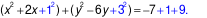
(Adding 12 and 32 to both sides)⇔ ( x + 1)2 + (y – 3)2 = 3.
Comparing this with the standard equation of circle this is equation of a circle with center (h, k) = (–1, 3) and radius . The graph of the circle is sketched in Figure 4.8
(b) Following the same steps as in (a), you can see that x2 + y2 + 2x − 6y +10 = 0 is equivalent to ( x + 1)2 + (y – 3)2 = 0.
This is satisfied by the point (−1, 3) only. The locus of this equation is considered as a point-circle, circle of zero radius (sometimes called degenerated circle).
(c) Again following the same steps as in (a), you can see that x2 + y2 + 2x − 6y +11 = 0 is equivalent to ( x + 1)2 + (y – 3)2 = −1.
Note that this does not represent a circle; in fact it has no locus at all (Why? ).
|
Remark: Consider an equation of the form
x2 + y2 + Dx + Ey + F = 0.
By completing the square you can show the following:
center
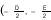 and radius . |
Exercise 4.2.2
|
1. Determine whether each of the following points is inside, outside or on the circle with equation
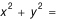 .(a) (−1, 2), (b) (3/2, 2) (c) (d) (−1, 3/2 )
2. Find an equation of the circle whose endpoints of a diameter are (0, −3) and (3, 3).
3. Determine an equation of a circle whose center is on y-axis and radius is 2.
4. Find an equation of the circle passing through (1, 0) and (0, 1) which has its center on the line 2x + 2y =5.
5. Find the value(s) of k for which the equation 2x2 + 2y2 + 6x – 4y + k = 0 represent a circle.
6. An equation of a circle is
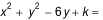 . If the radius of the circle is 2, .then what is the coordinates of its center?7. Find equation of the circle passing through (0,0), (4, 0) and (2, 2).
8. Find equation of the circle inscribed in the triangle with vertices (−7, −10), (−7, 15), and (5,−1).
9. In each of the following, check whether or not the given equation represents a circle. If the equation represents a circle, then identify its center and the length of its diameter.
(a)
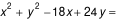 (d) 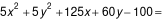
(b)
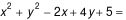 (e) 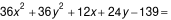
(c)
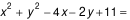 (f) 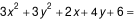
|
|---|
| 10. Show that x2 + y2 + Dx + Ey + F = 0 represents a circle of positive radius iff D2 + E2 − 4F > 0. |
Subsection 4.2.3 Intersection of a circle with a line and tangent line to a circle
The number of intersection points of a given line and a circle is at most two; that is, either no intersection point, or only one intersection point, or two intersection points. For instance, in Figure 4.9, the line l1 has no intersection with the circle, l2 has two intersection points with the circle, namely, Q1 and Q2, and l3 has only one intersection point with the circle, namely, P.
A line which intersects a circle at one and only one point is called a tangent line to the circle. In this case, the intersection point is called the point of tangency. Thus, l3 a tangent line to the circle in Figure 4.9 and P is the point of tangency.
In Figure 4.9, observe that every point on l1 are outside of the circle. Hence, d(C,Q) > r for every point Q on l1. Consequently, d(C, l1) > r. On the other hand, there is a point on l2 which is inside the circle. Hence, d(C, l2) < r.
For the tangent line l3, the point of tangency P is on the circle implies that |CP| = r and P is the point on l3 closest to C. Therefore, d(C, l3) = |CP| = r. This shows also that CP⊥ l3.
In general, given a circle of radius r with center C(h,k) and a line l , by computing the distance d(C, l) between C and l we can conclude the following.
(i). If d(C, l) > r, then the line does not intersect with the circle.
(ii) If d(C, l) < r, then the line is a secant of the circle; that is, they have two intersection points.
(iii) If d(C, l) = r, then l is a tangent line to the circle. The point of tangency is the point P on the line (and on the circle) such that CP ⊥ l . This means the product of the slopes of l and CP must be −1.
Example 4.12 Write the equation of the circle tangent to the x-axis at (6,0) whose center is on the line x −2y = 0.
Solution: The circle in the question is as in Figure 4.10.
Let C(h, k) be the center of the circle. (h, k) is on the line y =(1/2)x ⇒ k =(1/2)h ; and
the circle is tangent to x-axis at P(6,0) ⇒ CP should be perpendicular to the x-axis.
⇒ h = 6 ⇒ k= 3 and the radius is r = |CP| = k−0 =3.
Hence, the circle is centered at (6, 3) with radius r =3. Therefore, the equation of the circle is (x – 6)2 + (y−3)2 = 9 .
Example 4.13 Suppose the line y=x is tangent to a circle at point P(2,2). If the center of the circle is on the x-axis, then what is the equation of the circle?
Solution: The circle in the question is as in Figure 4.11.
Let the center of the circle be C(h,0). We need to find h. The slope of the line l : y=x is 1 and l is perpendicular to CP. Hence the slope of CP is –1.
So, the slope of CP =
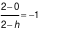
⇒ The center of the circle is C(4,0); and r2 = |CP|2 = (2– 0)2 + (2– 4)2 = 4+4= 8.
Therefore, the equation of the circle is (x – 4)2 + y2= r2 = 8.
Exercise 4.2.3
|
1. Find the equation of the line tangent to the circle with the center at (−1, 1) and point of tangency at (−1, 3).
2. The center of a circle is on the line y =2x and the line x=1 is tangent to the circle at (1, 6). Find the center and radius of the circle.
3.. Suppose two lines and
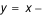 are tangent to a circle at (2, 2) and (4, 0), respectively. Find equation of the circle.4. Find an equation of the line tangent to the circle
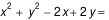 at (1,1).5. Find equation of the line through and tangent to the circle with equation
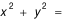 .6. Suppose P(1,2) and Q(3, 0) are the endpoints of a diameter of a circle and L is the line tangent to the circle at Q.
(a) Show that R(5, 2) is on L.
(b) Find the area of ∆PQR, when R is the point given in (a).
|